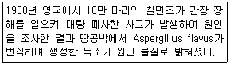

한식조리기능사 (2013-07-21 기출문제)
1과목: 식품위생 및 법규
1. 식육 및 어육 등의 가공육제품의 육색을 안정하게 유지하기 위하여 사용되는 식품첨가물은?
- 아황산나트륨
- 질산나트륨
- 몰식자산프로필
- 이산화염소
(정답률: 69%)

2. 식품위생의 목적이 아닌 것은?
- 위생상의 위해방지
- 식품영양의 질적 향상도모
- 국민보건의 증진
- 식품산업의 발전
(정답률: 75%)
3. 다음보기에서 설명하는 곰팡이 독소물질은?

- 오크라톡신(ochratoxin)
- 에르고톡신(ergotoxin)
- 아플라톡신(aflatoxin)
- 루브라톡신(rubratoxin)
(정답률: 75%)
4. 식육 및 어육제품의 가공시 첨가되는 아질산염과 제2급 아민이 반응하여 생기는 발암물질은?
- 벤조피렌(benzopyrene)
- PCB(polychlorinated biphenyl)
- 엔 니트로사민(N-nitrosamine)
- 말론알데히드(malonaldehyde)
(정답률: 68%)
5. 알레르기성 식중독에 관계되는 원인 물질과 균은?
- 아세토인(acetoin), 살모넬라균
- 지방(fat), 장염 비브리오균
- 엔테로톡신(enterotoxin), 포도상구균
- 히스타민(histamine), 모르가니균
(정답률: 69%)
6. 초기에 두통, 구토, 설사 증상을 보이다가 심하면 실명을 유발하는 것은?
- 아우라민
- 메탄올
- 무스카린
- 에르고타민
(정답률: 83%)
7. 감자의 부패에 관여하는 물질은?
- 솔라닌(solanine)
- 셉신(sepsine)
- 아코니틴(aconitine)
- 시큐톡신(cicutoxin)
(정답률: 58%)
8. 발육 최적온도가 25 ~ 37℃인 균은?
- 저온균
- 중온균
- 고온균
- 내열균
(정답률: 88%)
9. 우리나라에서 간장에 사용할 수 있는 보존료는?
- 프로피온산(propionic acid)
- 이초산나트륨(sodium diacetate)
- 안식향산(benzoic acid)
- 소르빈산(sorbic acid)
(정답률: 65%)
10. 세균의 장독소(enterotoxin)에 의해 유발되는 식중독은?
- 황색포도상구균 식중독
- 살모넬라 식중독
- 복어 식중독
- 장염비브리오 식중독
(정답률: 72%)
11. 식품위생법상 식품, 식품첨가물, 기구 또는 용기 포장에 기재하는 “표시”의 범위는?
- 문자
- 문자, 숫자
- 문자, 숫자, 도형
- 문자, 숫자, 도형, 음향
(정답률: 82%)
12. 조리사 면허의 취소처분을 받은 때 면허증 반납은 누구에게 하는가?
- 보건복지부장관
- 특별자치도지사, 시장, 군수, 구청장
- 식품의약품안전처장
- 보건소장
(정답률: 70%)
13. 영업허가를 받아야 하는 업종은?
- 식품운반업
- 유흥주점영업
- 식품제조가공업
- 식품소분판매업
(정답률: 79%)
14. 식품위생법에서 정하고 있는 식품 등의 위생적인 취급에 관한 기준에 대한 설명으로 틀린 것은?
- 식품등의 제조, 가공, 조리에 직접 사용되는 기계, 기구 및 음식기는 사용후에 세척, 살균하는 등 항상 청결하게 유지, 관리하여야 한다.
- 어류, 육류, 채소류를 취급하는 칼, 도마는 각각 구분하여 사용하여야 한다.
- 제조, 가공하여 최소판매 단위로 포장된 식품을 허가 받지 아니하고 포장을 뜯어 분할하여 판매하여서는 아니 되나, 컵라면 등 그 밖의 음식류에 뜨거운 물을 부어주기 위하여 분할하는 경우는 가능하다.
- 식품등의 원료 및 제품 등은 모두 냉동, 냉장시설에 보관, 관리하여야 한다.
(정답률: 84%)
15. 식품 등을 제조, 가공하는 영업을 하는 자가 제조, 가공하는 식품 등이 식품위생법 규정에 의한 기준, 규격에 적합한지 여부를 검사한 기록서를 보관해야 하는 기간은?
- 6개월
- 1년
- 2년
- 3년
(정답률: 58%)
2과목: 식품학
16. 탄수화물의 구성요소가 아닌 것은?
- 탄소
- 질소
- 산소
- 수소
(정답률: 69%)
17. 라이코펜은 무슨 색이며, 어떤 식품에 많이 들어있는가?
- 붉은색 - 당근, 호박, 살구
- 붉은색 - 토마토, 수박, 감
- 노란색 - 옥수수, 고추, 감
- 노란색 - 새우, 녹차, 노른자
(정답률: 73%)
18. 알칼리성 식품의 성분에 해당하는 것은?
- 유즙의 칼슘(Ca)
- 생선의 황(S)
- 곡류의 염소(Cl)
- 육류의 인(P)
(정답률: 60%)
19. 함유된 주요 영양소가 잘못 짝지어진 것은?
- 북어포 : 당질, 지방
- 우유 : 칼슘, 단백질
- 두유 : 지방, 단백질
- 밀가루 : 당질, 단백질
(정답률: 68%)
20. 이당류인 것은?
- 설탕(sucrose)
- 전분(starch)
- 과당(fructose)
- 갈락토오스(galactose)
(정답률: 54%)
21. 훈연 시 육류의 보전성과 풍미 향상에 가장 많이 관여하는 것은?
- 유기산
- 숯성분
- 탄소
- 페놀류
(정답률: 46%)
22. 동물이 도축된 후 화학변화가 일어나 근육이 긴장되어 굳어지는 현상은?
- 사후경직
- 자기소화
- 산 화
- 팽 화
(정답률: 93%)
23. 클로로필(chlorophyll) 색소의 포르피린 고리에 결합되어 있는 이온은?
- Cu2＋
- Mg2＋
- Fe2＋
- Na＋
(정답률: 54%)
24. 생선 육질이 쇠고기 육질보다 연한 것은 주로 어떤 성분의 차이에 의한 것인가?
- 글리코겐(glycogen)
- 헤모글로빈(hemoglobin)
- 포도당(glucose)
- 콜라겐(collagen)
(정답률: 57%)
25. 식품의 단백질이 변성되었을 때 나타나는 현상이 아닌 것은?
- 소화효소의 작용을 받기 어려워진다.
- 용해도가 감소한다.
- 점도가 증가한다.
- 폴리펩티드(polypeptide) 사슬이 풀어진다.
(정답률: 39%)
26. 고구마 100g이 72kcal의 열량을 낼 때, 고구마 350g은 얼마의 열량을 공급하는가?
- 234kcal
- 252kcal
- 324kcal
- 384kcal
(정답률: 71%)
27. 치즈제조에 사용되는 우유단백질을 응고시키는 효소는?
- 프로테아제(protease)
- 렌닌(rennin)
- 아밀라아제(amylase)
- 말타아제(maltase)
(정답률: 72%)
28. 쌀의 도정도가 증가할 때 나타나는 현상은?
- 빛깔이 좋아진다.
- 조리시간이 증가한다.
- 소화율이 낮아진다.
- 영양분이 증가한다.
(정답률: 74%)
29. 비타민에 대한 설명 중 틀린 것은?
- 카로틴은 프로비타민 A이다.
- 비타민 E는 토코페롤이라고도 한다.
- 비타민 B12는 망간(Mn)을 함유한다.
- 비타민 C가 결핍되면 괴혈병이 발생한다.
(정답률: 63%)
30. 생선묵의 점탄성을 부여하기 위해 첨가하는 물질은?
- 소금
- 전분
- 설탕
- 술
(정답률: 56%)
3과목: 조리이론과 원가계산
31. 육류조리에 대한 설명으로 맞는 것은?
- 목심, 양지, 사태는 건열조리에 적당하다.
- 안심, 등심, 염통, 콩팥은 습열조리에 적당하다.
- 편육은 고기를 냉수에서 끓이기 시작한다.
- 탕류는 고기를 찬물에 넣고 끓이며, 끓기 시작하면 약한 불에서 끓인다.
(정답률: 72%)
32. 냄새나 증기를 배출시키기 위한 환기시설은?
- 트랩
- 트랜치
- 후드
- 컨베이어
(정답률: 91%)
33. 시금치나물을 조리할 때 1인당 80g이 필요하다면, 식수인원 1,500명에 적합한 시금치 발주량은? (단, 시금치 폐기률은 5%이다.)(오류 신고가 접수된 문제입니다. 반드시 정답과 해설을 확인하시기 바랍니다.)
- 100kg
- 122kg
- 127kg
- 132kg
(정답률: 54%)
34. 신체의 근육이나 혈액을 합성하는 구성영양소는?
- 단백질
- 무기질
- 물
- 비타민
(정답률: 79%)
35. 단당류에서 부제탄소원자가 3개 존재하면 이론적인 입체 이성체 수는?
- 2개
- 4개
- 6개
- 8개
(정답률: 46%)
36. 전분의 호화와 점성에 대한 설명 중 옳은 것은?
- 곡류는 서류보다 호화온도가 낮다.
- 전분의 입자가 클수록 빨리 호화된다.
- 소금은 전분의 호화와 점도를 촉진시킨다.
- 산 첨가는 가수분해를 일으켜 호화를 촉진시킨다.
(정답률: 42%)
37. 점성이 없고 보슬보슬한 매쉬드 포테이토(mashed popato)용 감자로 가장 알맞은 것은?
- 충분히 숙성한 분질의 감자
- 전분의 숙성이 불충분한 수확 직후의 햇감자
- 소금 1컵: 물 11컵의 소금물에서 표면에 뜨는 감자
- 10℃ 이하의 찬 곳에 저장한 감자
(정답률: 62%)
38. 김치를 담근 배추와 무가 물러졌을 때 그 원인에 해당하지 않는 것은?
- 김치 담글 때 배추와 무를 충분히 씻지 않았다.
- 김치 국물이 적어 국물 위로 김치가 노출되었다.
- 김치를 꺼낼 때마다 꾹꾹 눌러 놓지 않았다.
- 김치 숙성의 적기가 경과되었다.
(정답률: 67%)
39. 난백의 기포성에 관한 설명으로 옳은 것은?
- 신선한 달걀의 난백이 기포형성이 잘된다.
- 수양난백이 농후난백보다 기포형성이 잘된다.
- 난백거품을 낼 때 다량의 설탕을 넣으면 기포형성이 잘된다.
- 실온에 둔 것보다 냉장고에서 꺼낸 난백의 기포 형성이 쉽다.
(정답률: 44%)
40. 식품의 감별법 중 틀린 것은?
- 감자 - 병충해, 발아, 외상, 부패 등이 없는 것
- 송이버섯 - 봉오리가 크고 줄기가 부드러운 것
- 생과일 - 성숙하고 신선하며 청결한 것
- 달걀 - 표면이 거칠고 광택이 없는 것
(정답률: 77%)
41. 식물성 유지가 아닌 것은?
- 올리브유
- 면실유
- 피마자유
- 버터
(정답률: 84%)
42. 조리기기 및 기구와 그 용도의 연결이 틀린 것은?
- 필러(peeler) : 채소의 껍질 벗길 때
- 믹서(mixer) : 재료를 혼합할 때
- 슬라이서(slicer) : 채소를 다질 때
- 육류파우더(meat pounder) : 육류를 연화시킬 때
(정답률: 78%)
43. 알칼로이드성 물질로 커피의 자극성을 나타내고 쓴맛에도 영향을 미치는 성분은?
- 주석산(tartaric acid)
- 카페인(caffein)
- 탄닌(tannin)
- 개미산(formic acid)
(정답률: 66%)
44. 전분을 주재료로 이용하여 만든 음식이 아닌 것은?
- 도토리묵
- 크림스프
- 두부
- 죽
(정답률: 74%)
45. 에너지 전달에 대한 설명으로 틀린 것은?
- 물체가 열원에 직접적으로 접촉됨으로써 가열되는 것을 전도라고 한다.
- 대류에 의한 열의 전달은 매개체를 통해서 일어난다.
- 대부분의 음식은 전도, 대류, 복사 등의 복합적 방법에 의해 에너지가 전달되어 조리된다.
- 열의 전달 속도는 대류가 가장 빨라 복사, 전도보다 효율적이다.
(정답률: 66%)
46. 냉동 육류를 해동시키는 방법 중 영양소 파괴가 가장 적은 것은?
- 실온에서 해동한다.
- 40℃의 미지근한 물에 담근다.
- 냉장고에서 해동한다.
- 비닐봉지에 싸서 물속에 담근다.
(정답률: 88%)
47. 쌀을 지나치게 문질러서 씻을 때 가장 손실이 큰 비타민은?
- 비타민 A
- 비타민 B1
- 비타민 D
- 비타민 E
(정답률: 76%)
48. 단체급식의 문제점이 아닌 것은?
- 영양가의 산출 오류나 조리 기술의 부족은 영양저하를 일으킬 수 있다.
- 식중독 및 유독물질이나 세균의 혼입으로 위생사고가 발생할 수 있다.
- 짧은 시간 내에 다량의 음식을 준비하므로 다양한 음식의 개발이 어렵다.
- 국가의 식량정책에 협조하여 식단을 작성하므로 제철식품의 사용이 어렵다.
(정답률: 75%)
49. 생선조리 방법으로 적합하지 않은 것은?
- 탕을 끓일 경우 국물을 먼저 끓인 후에 생선을 넣는다.
- 생강은 처음부터 넣어야 어취 제거에 효과적이다.
- 생선조림은 양념장을 끓이다가 생선을 넣는다.
- 생선 표면을 물로 씻으면 어취가 감소된다.
(정답률: 68%)
50. 육류의 사후강직과 숙성에 대한 설명으로 틀린 것은?
- 사후강직은 근섬유가 미오글로빈(myoglobin)을 형성하여 근육이 수축되는 상태이다.
- 도살 후 글리코겐이 혐기적 상태에서 젖산을 생성하여 pH가 저하된다.
- 사후강직 시기에는 보수성이 저하되고 육즙이 많이 유출된다.
- 자가분해효소인 카텝신(cathepsin)에 의해 연해지고 맛이 좋아진다.
(정답률: 30%)
4과목: 공중보건
51. 감염병의 병원체를 내포하고 있어 감수성 숙주에게 병원체를 전파시킬 수 있는 근원이 되는 모든 것을 의미하는 용어는?
- 감염경로
- 병원소
- 감염원
- 미생물
(정답률: 58%)
52. 채소류로부터 감염되는 기생충은?
- 동양모양선충, 편충
- 회충, 무구조충
- 십이지장충, 선모충
- 요충, 유구조충
(정답률: 78%)
53. 모기에 의해 전파되는 감염병은?
- 콜레라
- 장티푸스
- 말라리아
- 결핵
(정답률: 87%)
54. 광화학적 오염물질에 해당하지 않는 것은?
- 오존
- 케톤
- 알히드
- 탄화수소
(정답률: 46%)
55. 소음에 있어서 음의 크기를 측정하는 단위는?
- 데시벨(dB)
- 폰(phon)
- 실(SIL)
- 주파수(Hz)
(정답률: 41%)
56. 모체로부터 태반이나 수유를 통해 얻어지는 면역은?
- 자연능동면역
- 인공능동면역
- 자연수동면역
- 인공수동면역
(정답률: 55%)
57. 질병을 매개하는 위생해충과 그 질병의 연결이 틀린 것은?
- 모기 - 사상충증, 말라리아
- 파리 - 장티푸스, 발진티푸스
- 진드기 - 유행성출혈열, 쯔쯔가무시증
- 벼룩 - 페스트, 발진열
(정답률: 47%)
58. 다수인이 밀집한 실내 공기가 물리, 화학적 조성의 변화로 불쾌감, 두통, 권태, 현기증 등을 일으키는 것은?
- 자연독
- 진균독
- 산소중독
- 군집독
(정답률: 89%)
59. 온열요소가 아닌 것은?
- 기온
- 기습
- 기류
- 기압
(정답률: 83%)
60. 공중보건에 대한 설명으로 틀린 것은?
- 목적은 질병예방, 수명연장, 정신적, 신체적 효율의 증진이다.
- 공중보건의 최소단위는 지역사회이다.
- 환경위생 향상, 감염병 관리 등이 포함된다.
- 주요 사업대상은 개인의 질병치료이다.
(정답률: 88%)